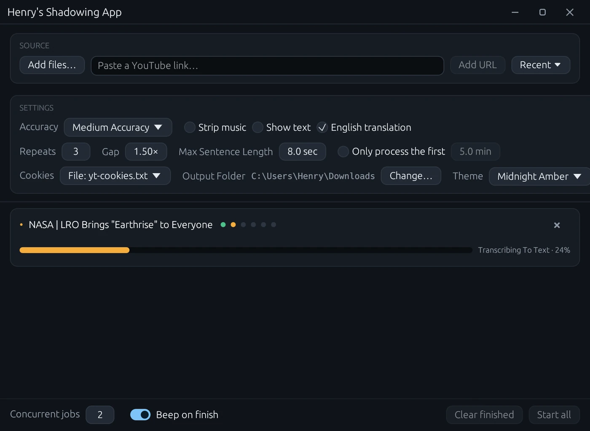

Turn any video or audio into shadowing practice — every sentence cut out, repeated, and waiting for you to speak.

Shadowing means hearing a sentence in the language you are learning and saying it straight back, again and again. The tedious part is the editing. This does that part.
How many times each sentence plays, and how long the silence after it lasts relative to the sentence.
Long sentences are split on a natural pause, so nothing outruns your working memory.
Burn in the transcript, with an English translation underneath if you want one.
Choose the Whisper model size. Bigger models catch more, and take longer.
Queue a batch and let it work through them; two run side by side by default.
Cap a job to the first few minutes to check your settings on a long video.
An NVIDIA graphics card makes this much faster. Transcribing and rendering both use the GPU when there is one. It works without, it just takes considerably longer.
On a Mac, open it the first time with right-click › Open — before you try it any other way. Drag the app out of the disk image into Applications, then right-click it and choose Open. The app is signed, but not notarised by Apple, so Gatekeeper will not vouch for it: double-clicking a freshly downloaded copy does not give you the permission prompt, and macOS may run it from a temporary read-only copy rather than the one you installed. Going through Open once gives you a button to allow it, and from then on it launches normally from Applications. The Mac build is for Apple Silicon, and transcribes on the CPU.
%LOCALAPPDATA%\Programs\Henrys Shadowing App — per user, no admin rights. On a Mac, wherever you drag the app; /Applications is the usual place.%LOCALAPPDATA%\henrys_shadowing_app.sha256 file next to the installer.